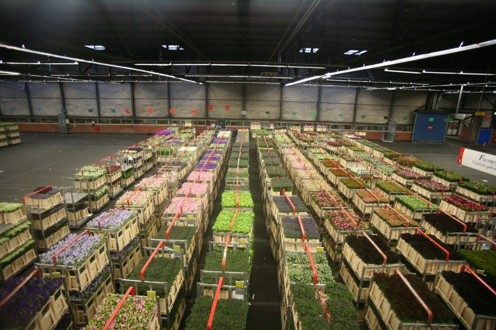

Aalsmeer
Aalsmeer is a small town and municipality in the Dutch province of North Holland with a population of nearly 31,000. It consists of the village Aalsmeer and smaller villages: Calslagen, Kudelstaart, Oosteinde, and Vrouwentroost. The town is part of the broader urban area around Amsterdam and is renowned for flower cultivation and tourism.
History

Aalsmeer was first known as Alsmar around 1133. The name appeared in official documents when land was given to the Rijnsburg Monastery, an abbey for noble nuns. The modern town emerged as marshlands were reclaimed in the 17th century. Fishing declined, and locals turned to strawberry farming. By the 1880s, the area's suitability for flower cultivation became evident, and today Aalsmeer is famous worldwide for its flowers and the largest floral auction (VBA).
Tourism and Recreation
In the 21st century, Aalsmeer thrives not only on its flowers but also on tourism. The town offers water sports, multiple marinas, natural pools with reeds, and numerous islands for recreation and horticulture. Most islands are privately owned, but boat tours allow visitors to explore their natural beauty.
Monuments and Art
Aalsmeer has 60 monuments registered as historic buildings. Statues and public art enrich the town's streets. It also maintains the tradition of flower parades ("Bloemencorso"). The original annual parade stopped in 2007 but was revived by the "Stichting Aalsmeers Bloemencorso" association in a smaller version.
Parking and Getting Around
There are six indoor parking lots in Aalsmeer that also serve nearby Schiphol Airport. Street parking is available in blue zones, which are free but limited to two hours using a blue parking disc. Drivers must place the disc behind the windshield and adjust the arrival time. Fines apply if the time limit is exceeded. Some areas are marked as no-parking zones.